Glossary of Footwear Terminology, S
Sabot
The work shoe of the
peasantry, frequently wooden.Sail stitch
A stitch used for closing a cut in the upper leather [Goubitz, 2001]
St. Hugh
(also Sir Hugh)
A character from shoemaking folklore. He makes his first known appearance in the late
16th century. This character may be the source for the 17th
century name "Col. Hewson" who was purported to be a shoemaker.
St. Hugh's Bones
A term for the shoemaker's tools. This term doesn�t appear in the documentation
before the 1590s.
Sandal
A simple type of footwear with a sole held on to the foot by straps. [Thornton/Swann, 1983]
Sandalium
A clerical (Bishop�s)
shoe.
Scarpine
(Scarpino, Scarpini, Escarpin, Escarpino)
A light shoe, maybe similar or synonymous with the pump. This term has also
sometimes been used for a type of broad toed shoe.
Scoh
An Anglo-Saxon/Old
English term for shoe, possibly referring to the high shoe styles since those
were so common in England of that period.
Scotch grain
A variant of box cowhide with a surface that is not smooth, but has had a pattern burned
into it at high temperature. Whole uppers are made of Scotch grain, but it is also
suitable for combination with other leathers. [Vass]Scouring the edges or bottom
Rubbing it with a rubbing stone [Holme, 1688]
Scraped
Shoe decoration that�s had the grain scraped off to create a contrasting surface
effect.
Scraping
(also called Glassing)
Trimming off excess leather by scraping it with the edges of a small piece of
broken glass, or with a sharp knife. This is usually done with heel or outer
sole edges after shaping them with a knife or rasp. [Devlin, 1840]
Scraping the grain of leather that is intended to be layered will help keep the
layers from squeaking.Screw stretcher
A device for widening the shoe by hand. [Vass]
Seam
- The line of junction between two sections. Seams can be classified in three ways:
- According to their position on the shoe, as in center front seam, back seam, and side
seam.
- According to the way the adjoining components meet each other, as in butted seam, lapped
seam, etc.
- According to the type of stitching, as in back stitch, hem stitch, etc. [Webber, 1989]
- The line where two or more leather parts are joined through sewing. [Goubitz, 2001]
Seam bead
A small strip of leather included in the seam of insole and envelope of leather
pattens or the heel seat of mule, visible between the insole and envelope. [Goubitz, 2001]
Seam Block
See Closing Block
Seam stay/strengthener
A small piece of leather, mostly heart-shaped, sewn inside the shoe over the side
seams; typical for shoes of the 16th - 18th century [Goubitz, 2001]
Seat
See Heel Seat
Seat Iron
A tool used to smooth and harden the stitches below the Seat.
[Devlin, 1840]Seat Lift
The lift next to the seat. [Thornton/Swann, 1983]
Second sole
A full-length sole added to a turnshoe, either with tunnel stitches or turn-welt
technique. [Goubitz, 2001] (See Outsole)
Securing pin/nail
On patten strap: metal pin used to prevent the inserted tab of the medial strap half
from slipping out of the lateral strap half of the patten's footstrap. [Goubitz, 2001]
Seld
A type of movable stall for street sales, rather than selling in the shoemaker�s
shop.
Set
v. Finishing a seam by heating with a candle, or using dissolved gum on the seam,
to solidify the wax around the stitches.. [Devlin, 1840]Setting the sole on the last
See Blocking [Holme, 1688]
Sew
Uses hemp thread to bind the insole to the upper leather along with the welt.
[Devlin, 1840]Sew'd
A contraction for "sewed". [Martin, 1745]
Sewing
- This refers to any seam,
including sewing a whip stitch where the hole or stitch path does not pass from
one side of the leather to the other, or only shows the thread on one side of
the work. �The Sewing� refers to the Inseam holding the overleather, the welt,
and the sole of a turn-shoe, or the insole of a double soled shoe or modern
unturned shoe.
- This uses a curved awl which only pierces part-way through no matter the pathway (See
Split Stitch, "making a split passage"), such as "whipping". [Saguto]
- When the awl, and subsequently the thread, pass partially through the thickness of the
leather, as with edge/flesh seams. [Goubitz, 2001]
Sewing block
See Closing BlockSewing hole
Round or oval holes left in the leather after the sewing thread has disintegrated.
[Goubitz, 2001]
Sewing on the sole
See Inseaming [Holme, 1688]Sewing or stitching the fore-round [Holme, 1688]
Sewing, the
See Inseaming.Sewing the heal
See Heel Sewing [Holme, 1688]
Sewing thread
Cotton or strong linen thread. Silk is recommended for stitching very delicate upper
components together. Sewing thread for the uppers consists of three, four, six, or nine
strands. The fineness of a thread is a function of its length in meters and its weight in
grams. The color of the thread should he one shade darker than the color of the upper
leather. [Vass]Shank
- See Waist.
- A reinforcement in welted shoes, placed centrally between the lasting margins (q.v.) of
the waist (q.v.) of a shoe and between sole and insole. [Thornton/Swann, 1983][Webber,
1989] Its purpose is to prevent the shoe from bending in the waist, but rather insure that
it bends at the Treadline where the foot bends, particularly when a heel is used.
[Saguto].
- A steel spring some 4 inches (10 cm) long and three-fifths of an inch (1.5 cm) wide that
strengthens the region of the waist in the gap formed by the welt and the insole. It
stiffens this part of the shoe, which must not move when walking. [Vass]
- Shank (See Arch support)
Shears
A large pair of scissors, made from a single strip of metal, used for cutting
leather. Shears appear in the medieval artwork as well.

Shoe
(Sceo, Scoh, Sho, Sco Latin: Sotularis;
Calceus)
- A generic term for footwear that come to, or just below, the ankle.
- Currently a generic term for any type of footwear, including boots, sandals, slippers,
clogs, pattens, overshoes etc. (excluding hosiery).
- An external covering for the human foot ending at or below the ankle. [Thornton/Swann,
1983][Webber, 1989]
- A full foot covering with a separate sole which may be hard or soft, and which ends at
or below the outside ankle. [Webber, 1989]
Shoe assembly
The working phase of shoe production in which the insole is nailed to the last and
attached to the edge of the upper, the welt and the top sole are sewn on, and the heel is
built. [Vass]Shoe-care set
Every owner of handmade shoes should possess a shoe-care set consisting of cleaning brush,
putting-on brushes, creams, cloths, and polishing brushes so he can take proper care of
his shoes. [Vass]
Shoe horn (Medieval spelling
includes: Shoeing Horn, Schoyng horne. Also referred to as a Shoe
Lift)
A tool made of wood, horn, or metal used to pull out the back of the shoe while
the foot slips into it. Shorter shoe horns are suitable for shoes, longer ones
for boots and ankle boots. [Vass; Lystyne lordys verament]Shoemaker
(Other medieval spellings include: Sceo-wyrhta, Shoe-maker Shoewright,
Schounemaker)
Someone who makes shoes. Sceo-wyrhta is an 11th century term. See
also Cordwainer, Cobelere and Soutor.
Shoemaker's knife
A steel knife with a slightly curved blade, used for cutting out the lower parts of the
shoe (sole, heel lifts), a quarter to a third of an inch (6-8 mm) thick. [Vass]
Shoemaker's Stitch
(Modern terms include: Saddle Stitch, Saddler�s Stitch)
Stitching with both ends of the thread at the same time, each side of every
stitch passing through the same hole at the same time.. The double ended threads
pass each other through the hole in the leather, and both are pulled tight
together, giving an even and controlled tension. A "double-running" stitch looks
the same, with a running stitch, then a second running stitch coming back
through and filling the gaps. This does not allow the same control of the
tension of materials.Shoemaker's tape measure
A non-elastic textile strip calibrated in French stitches on one side and metric units on
the other. [Vass]
Shoemakers Wax (Code, Coad, Hand, Handwax,
Paste).
A wax-like or taffy-like substance that shoemakers cere there threads with. In
general, traditional Shoemaker's Wax contains pitch, resin, and some oil.
it has no natural wax in it (although some recipes do allow for some beeswax).
See Code.Shoe man
See Maker. [Devlin, 1840]
Shoe style
A shoe with the special form and esthetic features of a particular style, the customer
selects the style in which he wishes his custom-made shoes to be produced. [Vass]Shoe thread

Shoe trees
Pieces of wood shaped like a last, designed to keep the shoes in shape. The two most
frequent and popular designs are the three-piece shoe tree and the sprung shoe tree.
[Vass]Short Bones
These are just short flat bits of bone like bone folders/folding bones used for
slickening seams. (See also Bones and Sticks)
Short Heel
See Girths.
Shoulder Bone
See Bones and SticksShoulder Iron
Or Fore Part Iron. A tool used to smooth and harden the channel, keeping
the edge of the sole square. [Devlin, 1840]
Shouldering
v. To use a Shouldering Iron. [Devlin, 1840]Shovers
- Laminated leather fitting [q.v.] similar to an instep-leather [q.v.], but which extends beyond the instep all
the way to the toe of the last, most frequently associated with comb-lasts for
closed-front, pull-on boots, removed first to facilitate the last's
removal. [Saguto, 2004]
- Used with a Comb Last and a Wedge. It is not
certain when this technology was first developed, although based on the appearance of Wedges
in Deloney and Holme
suggests that they may have been been in use at least by the late 16th century in England.
Saguto suggests that they may have been used far earlier, well into the Medieval
period, although the evidence for this is unclear. These, with the Wedges, are used
to precisely adjust the Girths. When the wedge is removed, the shover can be removed, and
then the last removed. Shovers are made from leather.

Side linings
Narrow pieces of leather cut from the same hide as the upper leather and placed between
the upper and lining leathers and between the toe cap and the heel cup to stop the leather
stretching and to strengthen both sides of the shoe. [Vass]Side Seam
-
The seam that joins the
forefoot to the rear quarters. Wrap-around shoes have a single side seam.
- The seam at the side of the shoe joining one piece shoes (q.v.) or vamp to quarter.
[Thornton/Swann, 1983][Webber, 1989] [Goubitz, 2001]
- A seam that joins a once piece shoe on the side running from the large toe to the back
seam, usually 1-2 cm above the imprint line. [Webber, 1989]
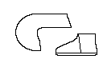
- See Wrap-around.
Sinew
- The tendon fiber which was used at certain times and places by many people for
stitching leather. There is no evidence for it being used for shoes or boots in
the Middle Ages.
- The tendon fiber which is frequently used by some early peoples, chiefly as thread for
sewing purposes. The fiber thus used is the tendon from the legs and also the large
tendon, up to about eighteen inches in length, lying along each side of the backbone of
the caribou, or other animal, just behind the neck joint. The tendons are stripped out and
dried, then split and often twisted. According to some authorities, sinew is always the
muscle sheathing taken from the muscles abutting the spine. There seems to be no consensus
on this matter. [Webber, 1989]
Single heel lift
A layer of leather under the heel seat of a 16th-century shoe as an integrated
prevention against premature wear. [Goubitz, 2001]
Single-piece construction
See Moccasin
Single-soled shoe
- Used to indicate turn-shoes that do not have an outer sole.
- Footwear with turnshoe construction. [Goubitz, 2001] [This definition is incomplete, since
there are many later era turnshoes that have more than one sole]
Size
- A measurement indicating the length of a shoe. There are a number of systems in
use today. Although shoemaking tradition says the English system was set in
place by Edward II in 1324, based on the length of three barleycorns to the
inch, there is no evidence that this was used before the 18th
century. Evidence suggests that by the 17th century, sizes were
based on 1/4 inch per size with 12� being a size 15, and this system was used
until the 18th century.
- A number indicating the length of the shoe. Various measuring systems are in use: French,
English, American, and metric. [Vass]
Size Stick/Shoe Size (See Foot Measure)
- Gage - shoe measure [Holme, 1688]
- Sliding Rule. A measuring stick used for measuring the foot. [Martin,
1745]
Skin
The pelt from smaller animals (goat,sheep,deer,dog, etc.)[Thornton/Swann, 1983]Skinner cuts
Slightly curved cuts on the flesh side of the leather caused by skinning the animal.
[Goubitz, 2001]
Skive, Skiving
- Paring the edges of the leather, tapering them to thin the amount of leather needed to
work with when sewing, turning or puckering. This is carefully done by slicing away from
you, cutting away the thickness of the edge of the leather.
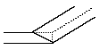
- Skiring/paring Thinning out the leather's edge by shaving or thinly slicing away
the thickness. [Goubitz, 2001]
- A very thin piece of leather, from which most of the flesh has been removed.
[Bookbinding trade]
Skiver
A small, sharp plane with a guide channel in it used to remove any protruding surfaces of
leather, fraction by fraction, and to match up the edges of stile and heel. [Vass]Slack heel
A modification of the sole/upper construction so that the back part and the insole are
sewn separately and not connected to the treadsole (outsole) and heel component, making a
flexible back part to compensate for the stiff, inflexible sole used on this type of shoe
[Goubitz, 2001]
Slap Sole
A sole extended from forepart to heel not following waist curve. Often not attached to the
heel, hence the slap (17th Century). [Thornton/Swann, 1983]Sleeking Iron
A tool used for Slicking. [Devlin, 1840]
Slickening
(Burnishing, Slicking)
Making a seam or overleather leather smooth or polished by rubbing it with a
hard smooth tool, such as one of the variety of sticks or bones.
Slicking
- Burnishing with one of a variety of sticks, to polish the leather. [Martin, 1745]
- Slickening it off, polishing the upper leather. Burnishing and Ragging off the Uppers.
[Holme, 1688]
Sliding Rule
See Size Stick.Slim Inseam
A weak inseam made when the thread used to sew the seam has become abraded and
tangled by not waxing the thread enough. [Devlin, 1840]
Sling Back
A shoe with a strap passing round the back of the ankle instead of complete quarters.
[Thornton/Swann, 1983]Slip Lasting
Slip-lasted shoes are built without a board, creating shoes that are much more flexible
and softer than those built with any other type of last. [www.eastbay.com/help/glossary]
Slipper
(Other early medieval spellings include: Slebescoh, Slipshoe,
Slypesco, Slype-sceo, Slypesco, Staeppescoh,
Swiftlere)
- A low cut shoe that can be slipped on, and has no means of fastening.
- A cheap, low shoe meant to be worn indoors.
Smoke Tanning
(Aldehyde Tannage)
By smoking the skin over a wood fire, and application of fats and oils to keep
the skin more supple. The wood smoke releases various aldehydes and phenols into
the skin that simulate tannage. See also Combination Tannage, Oil
Dressing, Tanning, Tawed leather.
Sock
(also called Sock Lining Modern terms include: Inner sock)
An inner sole used to cover the Insole. These may not have been used
in the Middle Ages.
- A piece of material stuck inside a shoe to cover the insole; a "heel sock"
just covers the back part (heel seat). Its purpose is to cover nail points or stitches but
it may also carry the maker's name, trade mark, etc. To avoid confusion with hosiery, may
be termed in- or insole sock [Thornton/Swann, 1983]
- A short stocking usually reaching to the calf or just above the ankle. [Webber, 1989]
- Sock Lining. A piece of material inside a shoe to cover the sole or insole. It
can be both decorative and functional, to hide the construction marks on the insole.
Various descriptive terms are used according to length: heel, three-quarter, or full.
Shoemakers often refer to this lining simply as "sock". [Webber, 1989]
Sock Lining
See SockSokke
(Other medieval spelling includes:
Socc Latin: Soccus)
An Anglo Saxon term for a simple slipper consisting of a light overleather and
sole, possibly synonymous with slebescoh or slypesco, as well as being callicula
and gallicula, both terms apparently derived from the Roman caligae.
Sole
- The bottom part of the shoe. Usually made with the grain side of the leather in contact
with the ground. If there is a heel, the waist of the sole does not actually touch the
ground. If the shoe has a separate heel (q.v.) the bottom section of this next to the
ground is called the "top-piece". [Holme, 1688][Thornton/Swann, 1983]
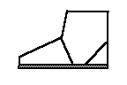
In medieval Latin, this is Solea. Thomas Wright, in his commentary on John of
Garland, Dictionarius, refers to Semelles and Semeus.
- Sole/bottom An all-inclusive term for the parts of the shoe under the foot.
[Goubitz, 2001]
- A component in the lower part of the shoe. Single-soled shoes have only a top sole,
which makes contact with the ground. Double-soled shoes have a top sole and a middle sole.
[Vass]
Sole construction
The way in which the sole layers are built up; and the method used to attach the sole to
the uppers. [Goubitz, 2001]
Sole edge
The edge of the welt and the top sole or of the welt, middle sole, and top sole. [Vass]
Sole filling piece (See Filling Piece)
Sole leather
See bend leather.
Sole Pattern
This appears to be a wooden form used
to cut the shape of the sole. Holme shows it as this:
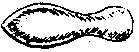
Sole section
Of one-piece shoe: the area of the learher upon which the foot rested; the imprint
line of the foot, which can be seen from the wear marks, defines the sole shape. [Goubitz,
2001]
Sole seam
- The seam joining the sole or bottom unit and the upper. See Inseam.[Thornton/Swann,
1983][Webber, 1989]
- Seam by which the sole of a turnshoe is connected to the upper. [Goubitz, 2001]
Sole shaping piece
Piece(s) of leather wedged between sole layers to give extra support to the foot or to
correct deviant foot position. [Goubitz, 2001]
Sole Stitching
Stitching the sole to the Rann [Holme, 1688]
Soller
An Anglo Norman term for shoes in general or a particular type of shoe. The
term likely derived from the French soulier.
Solleret
Armored footwear made up of lames or plates. The term appears to have been used
in English around 1826.
Soling
- The process of sticking and sewing the top sole cut out of bend leather to the welt.
[Vass]
- Fitting a new sole to shoes handed in for repair. [Vass]
Sotulares
(Latin: Sotularium)
Shoes, may also refer to inexpensive shoes, and possibly clerical shoes. May be
synonymous with the subtalaris, or may refer to high shoes
Sotulares Veteres
A medieval Latin term referring to old, patched or remade shoes, deriving from
the Classical Latin veterementarius, or cobbler.
Souter
(Other medieval spellings include: Sewtor, Sutor)
A medieval term for a shoemaker derived from the Latin "sutor". The early term
sutor allutarius referred to a shoemaker who worked in Alluta, (see Cordwainer),
as opposed to a sutor vace, work worked in bovine leather. Eventually it came
to refer to a Cobbler and was a term of abuse. and by the 16th
century, it referred to an unskilled workman, with little or no education in
"real" shoemaking. See also Shoemaker, and Cobler.
Split Hold
(also informally referred to as �Making a split passage�, �Split Hold
Sewing�,
�Split
Stitch�)
- In sewing, the awl enters one face of the leather, but does not stab through the
leather. Instead it either emerges from the same face of the leather, or out the
edge, in either case �splitting� the leather. Archaeologically, the split hole
will appear as an edge/flesh stitch, a tunnel stitch, or a decorative stitch.
See Closing.
- A stitch used on the inside seam. [Devlin, 1840]
- The following are Split Holds:
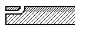


Split-Lift
. [Rees, 1813]Split pullstrap
Fastening method using a strap that has one end divided into multiple thongs that are
fixed to the shoe [Goubitz, 2001]
Spring
The distance between the underside of the toe of the shoe (or last) and the ground.
[Goubitz, 2001] (See also Toe Spring)
Spring Heel
These are made by
inserting one or more lifts between the outer sole and the welt. They are a 16th
century technique presaging the later raised heels.
Stabbed Seam
This refers to two similar types of seams, both of which are stitched through so
that the thread shows on both sides of the work. The first (Modern terms
include: Closed (or Close) Seam) is a seam formed when two leather pieces
are stitched together like a seam in clothing, face to face, then opened
out and flattened. Do not confuse the modern, archaeological term closed seam
with the shoemaking term closed. The second (Modern terms include: Lapped
Seam, Overlapped Seam) is a seam formed between two overlapping
sections of leather.
- A seam formed when two upper sections are stitched together face to face along an edge
and then opened out and flattened. [Thornton/Swann, 1983][Webber, 1989]
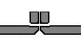
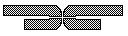
- Lapped Seam (Overlapped Seam)
A seam where two pieces of leather are overlapped, stitch holes are stabbed, and they are
stitched together right through the full substance of both sections.[Thornton/Swann,
1983][Webber, 1989]
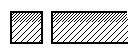
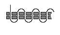
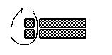
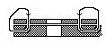
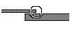
- Lapped seam
A seam that joins two leather pieces overlapping each other along the edges, and which is
stitched straight through both layers [Goubitz, 2001]
Stabbing
(Modern terms include: Grain/flesh stitching)
This refers to stitching the leather from side to side, so that the stitch
is visible on both sides of the leather. Stabbing specifically uses a straight
awl, while stitching may be done with either a straight or curved awl.
- Sticking the awl completely through the leather. [Devlin, 1840]
- Uses a straight awl (as opposed to Stitching, which uses a curved or straight awl). This
goes in one side of the leather and out the other, and so it shows on both sides. [Saguto]
Stacked Heel
A heel consisting of a number of lifts (q.v.) and sometimes also jumps. (see Built Heel)
[Thornton/Swann, 1983]Stamping
v. To stamp the maker's mark into the sole. [Devlin, 1840]
Stand leather
Bands of leather as side linings along the lower parts of the vamp for supporting the
shape. [Goubitz, 2001]
Stayed seam
Seam with reinforcement sewn over it. [Goubitz, 2001]
Steel plate
Often used instead of a quarter rubber to give a better grip on slippery surfaces.Sticks (Shoulder Sticks, Helling Sticks, etc)
See Bones and Sticks
Stiffener (or Heel Stiffener)
See CounterStiffeners
Pieces of leather cut from the same hide as the upper leather that are placed beneath
brogueing rows, for example, or on the upper part of the tongue. [Vass]
Stilt
On wooden patten/wooden shoe: two or more protruding, wedge-shaped structures on the
underside of the sole that serve to raise the sole off the ground. [Goubitz, 2001]
Stirrup
(Other medieval spellings include: Sterop Also Stirrup Strap)
A narrow belt or strap that is used by wrapped under the foot and around the
thigh, holding the last or a closing block. It is used to hold the shoemaker's
work in place under tension. It is only used for Sewing. This strap is usually
leather, and might be divided, but rope was also used, as was cloth for clean
work. Even as late as the 20th century, use of a Stirrup was not
universal, and many shoemakers appear in pictures holding their work in their
laps. See Closing Block and Footing Block. Note that the
verb �stirrup� and the term �oil of stirrup� refer to beating someone with the
stirrup strap.
- The leather strip that, wrapped around the knee and the closing block used to hold the
shoemaker's work. [Devlin, 1840]
- A long strip of leather that wraps around the knee and held in place by the foot, often
with a Heel Block to help control the pressure, used as a form of clamp to hold the work
steady while you stitch. The stirrup may be split at the top so that it straddles the
seam. The stirrup could also be used to hold the last during the making of the shoe.
[Saguto]
- A Scots term for stirrup was Cashel
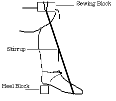
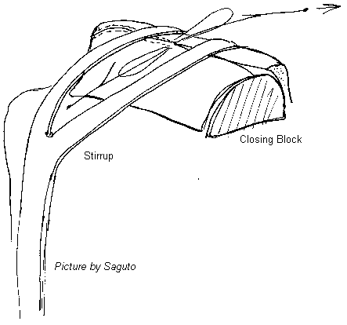
Stitch
Stitch indicates the
single placement of the thread through the hole in the leather, or a particular
type of placement of the thread through the leather. It can also refer to a
single thrust of an Awl into the leather. Stitch is also used today in some
archaeological materials to refer to the pitch of the thread, or number of
stitches per inch.
- Uses a square, or French Awl. Uses soft, yellow dyed flax to attach the welt and the
outsole together. [Devlin, 1840]
- The length (pitch) of the thread going from one stitch hole to the next. [Goubitz, 2001]
Stitch hole
The hole left in the leather after the thread has disintegrated. [Goubitz, 2001]
Stitch Prick
A tool with a number of sharpened teeth (frequently looks like long roweled spur) used
for marking where holes should be made, or on thin leather pricking those holes.
Stitch Length
See PitchStitchdown (Stitch-down, Outstitched)
A type of shoe construction in which the upper is turned outward around its bottom edge to
form a flange, which is then stitched to a sole or middle sole. The term "Stitch
down" has been used at least since 1700, although the construction style may be far,
far older. See also Veldtshoen. [Thornton/Swann, 1983][Webber, 1989] [Goubitz, 2001]
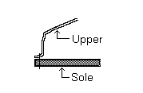
Stitching
This refers to piercing the leather from side to side, so that the stitch is
visible on both sides of the leather (See Stabbed Seam). In
post-Medieval shoemaking, �The Stitching� (Modern terms include: Outseam)
specifically refers to the seam attaching the outer sole to the welt. Stitching
may be done with either a straight or curved awl, while stabbing specifically
uses a straight awl. In a medieval double soled shoe, the welt is stabbed and
the outer sole is sewn in what I am referring to as a blind split seam.
Stitching ("The Stitching", Outseam)
- Uses a curved or straight awl (as opposed to Stabbing, which uses a
straight awl). This goes in one side of the leather and out the other, and so it shows on
both sides. [Saguto]
- When the awl, and subsequently the thread, pass straight through the thickness of the
leather; the leathers can be overlapping or facing each other. [Goubitz, 2001]
- The Stitching - The stitching the outsole to the welt.
Stitching Aloft
The reference to stitching aloft is specifically mentioned in The Harvard Economic Studies
Series, Vol.XXIII, The Organization of the Boot And Shoe Industry in Massachusetts
before 1875 by Blanch Evans Hazard, 1921 Page 117. Its first use is likely to have
been between 1857-1865 [Robert J. Galvin/DA Saguto]Stitching-channel flap
The leather edge formed when material is pared away from the mark. It covers the top-sole
seam, which would otherwise make contact with the ground and quickly get worn away, sooner
or later leading to the separation of the sole. [Vass]
Stitching Stick
A tool for
slickening stitches.
Stitching the sole to the Rann
(Sole Stitching) [Holme, 1688]
Stitching thread - sole to Rann [Holme, 1688]
Stopping stick
(also Stopper)
This tool is referred to in some of the sources, and the meaning is
obscure. It may refer to a stropping stick. It may also refer to a tool for
stopping, that is to say, filling in openings.
Salaman and Saguto refer to this as probably being the same as a Stropping Stick,
while the OED speculates that this tool was used to "fill in crevices".
Straight Shoes
(also Upright, Straight sole)
Shoes that are made to fit either foot, as opposed to those that are made to fit
right and left specifically. Contrary to popular belief, straight shoes are NOT
a normal medieval shoemaking style.
Straight sole
A sole with a symmetrical shape, i.e. neither left-or right-foot oriented. [Goubitz, 2001]
See also Straights and Upright
Straights (see also Upright)
- The term applied to symmetrical shoes which are not made left and right, but
can be worn on either foot. [Webber, 1989]
- General from 1600 to 1800, less
frequently in the 19th century, except for women and children.
[Thornton/Swann, 1983]
- The OED 2d Ed has 1934 as it's earliest entry
on this use.
- See also Last, Upright or Straight
Straps
(Tab Modern terms include: Buckle attachment strap,)
Straps and latchets are formed by bringing tabs from the quarters forward
over the instep for fastening the shoe. Straps are used to buckle or button the
shoe; latchets are used to tie the shoes. Straps are often incorrectly called
latchets.
- A strap or tab formed when the top front of the quarter is extended and passes over the
instep of the foot, sometimes resting on the tongue of the shoe vamp. These are used to
fasten a shoe with buckles. They are similar to a Latchet
- Languides or straps, the one tied with shoe ties, the latter with buckles. [Holme, 1688]
Strap keepers
(See Keepers)
Strengthening cord
A thread or cord sewn to the leather inside of the shoe to prevent stretching.
[Goubitz, 2001] See also Reinforcement Cord
Stretcher
A metal device for widening the shoe. [Vass]Strip
Stropping stick
(Other terms include Sharpening Bat, Bat, Buff, Buffing
Strap or Strop, Stopping or Stropping Stick, Rap
Stick, Rifle, Whittie)
A wooden stick, covered on its two to four sides with leather, and is used to
help keep awls, shears and knives sharp. This may not be a medieval tool,
but it�s reasonable that something very like this was used. In Scots
this is a Whittie, while Riffle is is supposed to derive from the Old French
"Riffle"
Instructions:
- Stop working. Start by stropping your blade along the edge of the stropping stick across
the grain of the wood, or along the leather. A four sided bat can be covered with a variey
of grits, from nothing but the surface of the wood, or leather through jeweler's rouge or
similar substance. Stroke the blade firmly and smoothly and evenly. Do both sides.
Carefully run your thumb along the edge, checking for burrs, checks or rough edges.
- If the stropping doesn't make the burrs go away, use a stone.
- Be patient.
- Keep doing this until you can't feel a burr and your knife cuts smoothly again.
Stud chape
An attachment device for detachable buckles with spiked tongue and a short bar that has a
stud or a knob on it; the buckle is put on the medial quarter's top front by slipping the
bar through a crescent-shaped slit and the knob pushed up through the adjoining hole.
[Goubitz, 2001]
Stuff
Everything that goes into making up the bottom. Also used to refer to filling
leather with waxes, fats and oils such as gresyn.
Style collection
A collection of shoe styles in the showrooms of the shoemaking workshop. [Vass]Style design
A drawing of the shoe to be made, with its decoration, seams, and the shapes of the
individual components, on the last itself, this enables the design to be examined in three
dimensions. [Vass]
Style designer
The style designer, on the basis of classical traditions, designs the shape and decoration
of the upper, the proportions of its components, varies colors and materials, and creates
new combinations. He constantly attempts to add new elements to the classical traditions.
[Vass]Style form
A form for the upper components. It highlights where the components meet, their relative
size, and all lines, curves, and decorations. It is used to make individual forms for the
upper components. [Vass]
Subtalaris
(Other medieval spelling includes Subtelaris)
The term is Latin, and means �below the heel�. In the Anglo Saxon era it
appears to have been term for a low shoe, and may have been used to refer to
staeppescoh and swiftlere. It may also refer to a clerical shoe. The term also
apparently was used to refer to a chaucepey.
Subula
see Awl.Supination
When your foot rolls outward upon contact with the ground. A rare condition that affects
less than one percent of the population. [www.eastbay.com/help/glossary]
Swayed/curved sole
A sole matching the right or left curving of the foot. [Goubitz, 2001]
Return to Contents or [Next]
Footwear of the Middle Ages - Glossary of Footwear Terminology S,
Copyright � 1999, 2000, 2001, 2005 I. Marc Carlson.
This page is given for the free exchange of information, provided the author's name is
included in all future revisions, and no money change hands, other than as expressed in
the Copyright Page.